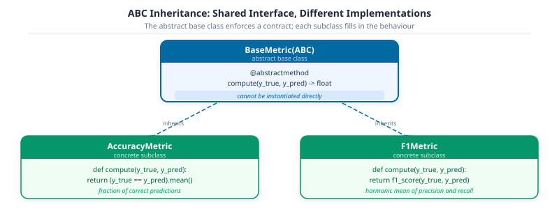

class StudentRecord:
"""A single student's academic record.
Args:
name: Student's full name.
scores: List of numeric assessment scores (0-100).
program: Degree program name.
"""
def __init__(
self,
name: str,
scores: list[float] | None = None,
program: str = "Undeclared",
) -> None:
self.name = name
self.scores: list[float] = scores if scores is not None else []
self.program = program
def __repr__(self) -> str:
avg = sum(self.scores) / len(self.scores) if self.scores else 0.0
return f"StudentRecord(name={self.name!r}, program={self.program!r}, avg={avg:.1f})"Part 3b: Python Patterns – Classes, Exceptions, and Defensive Code


DS-MLOps Python Foundations
Python 3.12+ | Author: Anthony Faustine
You have three functions that belong together: one that computes a student average, one that assigns a letter grade, and one that loads a student record from a CSV row. They all operate on the same data. Right now they live at module level, unconnected, and every caller has to know to call all three in the right order.
A class puts that relationship in code. It names the concept, bundles the data and the behaviour, and makes the contract explicit: every StudentRecord always knows its average and its grade, regardless of who created it or when.
Part 3a covered functions, lambdas, and dataclasses – reusable code units. A class goes one step further: it bundles the data and the operations on it into a single named object. By the end of this notebook you’ll have the full Python vocabulary needed for Part 4: NumPy arrays and vectorised computation.
Callout markers: book cover page.
1. Classes
A class is a blueprint for creating objects. Each object (instance) bundles its own data (attributes) with the functions (methods) that operate on it. You create the blueprint once with class, then stamp out as many instances as you need.
Three things make a class useful rather than just a namespace: - __init__: sets the initial state of each instance - __repr__: returns a readable string when you print or inspect the object - methods: functions that always have access to the instance’s data via self
__init__ and __repr__
Every class needs two methods before it’s useful in interactive work. __init__ runs the moment you create an instance: it receives the raw data and stores it on self. __repr__ is what Python prints when you inspect the object in the REPL or call print() on it.
Without __repr__, Python shows something like <__main__.StudentRecord object at 0x7f3a2c1d4e50>. That address tells you nothing. With a good __repr__ you can see the name, program, and average in one glance, which makes debugging feel like reading, not guessing.
The rule: __repr__ should produce a string that is both human-readable and, where possible, copy-pasteable back into Python to re-create the object.
alice = StudentRecord(
name="Alice Kamau",
scores=[88.0, 92.0, 85.0, 90.0],
program="Computer Science",
)
bob = StudentRecord(
name="Bob Mwangi",
scores=[62.0, 70.0, 58.0, 74.0],
program="Mathematics",
)
print(alice) # __repr__ in action: no print formatting needed
print(bob)StudentRecord(name='Alice Kamau', program='Computer Science', avg=88.8)
StudentRecord(name='Bob Mwangi', program='Mathematics', avg=66.0)@property: Computed Attributes
You could store the average as an attribute set in __init__: self.average = sum(scores) / len(scores). The problem is stale state. If someone appends a score later – student.scores.append(95.0) – the stored average is now wrong, and nothing tells you.
A @property computes the value fresh every time you access it. From the caller’s side it looks exactly like reading a plain attribute: student.average, no parentheses. Under the hood Python calls the method. You get the right answer regardless of when scores were added.
Use @property for any value that is derived from other attributes. Store it explicitly only if the computation is genuinely expensive and you have a caching strategy.
class StudentRecord:
"""A single student's academic record with computed grade properties.
Args:
name: Student's full name.
scores: List of numeric assessment scores (0-100).
program: Degree program name.
"""
def __init__(
self,
name: str,
scores: list[float] | None = None,
program: str = "Undeclared",
) -> None:
self.name = name
self.scores: list[float] = scores if scores is not None else []
self.program = program
def __repr__(self) -> str:
return f"StudentRecord(name={self.name!r}, program={self.program!r}, avg={self.average:.1f})"
@property
def average(self) -> float:
"""Mean of all scores; 0.0 if no scores recorded."""
return sum(self.scores) / len(self.scores) if self.scores else 0.0
@property
def letter_grade(self) -> str:
"""Letter grade derived from current average."""
avg = self.average
if avg >= 90:
return "A"
if avg >= 80:
return "B"
if avg >= 70:
return "C"
if avg >= 60:
return "D"
return "F"alice = StudentRecord("Alice Kamau", [88.0, 92.0, 85.0], "Computer Science")
print(f"Before: avg={alice.average:.1f} grade={alice.letter_grade}")
# Add a new score: the property recomputes on the fly
alice.scores.append(95.0)
print(f"After : avg={alice.average:.1f} grade={alice.letter_grade}")
print(alice)Before: avg=88.3 grade=B
After : avg=90.0 grade=A
StudentRecord(name='Alice Kamau', program='Computer Science', avg=90.0)@classmethod Factory Methods
pandas provides DataFrame.from_dict(). scikit-learn provides Pipeline.from_config(). These are factory methods: alternative constructors that build an instance from a different kind of input without requiring the caller to know the internal constructor signature.
The pattern is useful whenever your data arrives in a format different from what __init__ expects. A CSV row is a dict[str, str] where every value is a string. Putting the parsing logic inside a @classmethod keeps __init__ clean and makes the intent explicit at the call site: StudentRecord.from_dict(row) reads like documentation.
class StudentRecord:
"""A student record with factory method support.
Args:
name: Student's full name.
scores: List of numeric assessment scores (0-100).
program: Degree program name.
"""
def __init__(
self,
name: str,
scores: list[float] | None = None,
program: str = "Undeclared",
) -> None:
self.name = name
self.scores: list[float] = scores if scores is not None else []
self.program = program
def __repr__(self) -> str:
return f"StudentRecord(name={self.name!r}, program={self.program!r}, avg={self.average:.1f})"
@property
def average(self) -> float:
"""Mean of all scores; 0.0 if no scores recorded."""
return sum(self.scores) / len(self.scores) if self.scores else 0.0
@property
def letter_grade(self) -> str:
"""Letter grade derived from current average."""
avg = self.average
if avg >= 90:
return "A"
if avg >= 80:
return "B"
if avg >= 70:
return "C"
if avg >= 60:
return "D"
return "F"
@classmethod
def from_dict(cls, record: dict[str, object]) -> "StudentRecord":
"""Construct a StudentRecord from a raw CSV row dict.
Args:
record: Dict with keys 'name', 'scores' (comma-separated string
or list of floats), and 'program'.
Returns:
A new StudentRecord instance.
"""
raw_scores = record.get("scores", "")
if isinstance(raw_scores, str):
scores = [float(s.strip()) for s in raw_scores.split(",") if s.strip()]
else:
scores = list(raw_scores) # type: ignore[arg-type]
return cls(
name=str(record.get("name", "")),
scores=scores,
program=str(record.get("program", "Undeclared")),
)# Simulated rows as they would arrive from csv.DictReader
raw_rows: list[dict[str, object]] = [
{"name": "Carol Osei", "scores": "91.0, 95.0, 89.0", "program": "Data Science"},
{"name": "Dan Kimani", "scores": "74.0, 68.0, 80.0", "program": "Mathematics"},
]
records = [StudentRecord.from_dict(row) for row in raw_rows]
for r in records:
print(r)StudentRecord(name='Carol Osei', program='Data Science', avg=91.7)
StudentRecord(name='Dan Kimani', program='Mathematics', avg=74.0)Inheritance and Abstract Base Classes
Inheritance is often introduced as a code-reuse tool: put shared logic in a parent class. That is true, but it misses the more important use case in ML engineering: enforcing a contract.
When you define an Abstract Base Class (ABC), you’re saying: any class that claims to be a BaseMetric must implement compute(y_true, y_pred). Python will refuse to instantiate a subclass that forgets to implement it. This isn’t a convention or a code review comment – it’s a runtime guarantee.
This is how scikit-learn’s BaseEstimator enforces that every estimator has .fit() and .predict(), and how PyTorch’s nn.Module enforces forward(). You will implement the same pattern here for evaluation metrics.
The inheritance chain makes the contract visible. BaseMetric declares what every metric must implement; concrete classes fill in the details. Python refuses to instantiate BaseMetric directly – you can only create AccuracyMetric or F1Metric.

from abc import ABC, abstractmethod
class BaseMetric(ABC):
"""Abstract base class for all evaluation metrics.
Subclasses must implement `compute`; Python will refuse to instantiate
any subclass that does not.
"""
@abstractmethod
def compute(self, y_true: list[int], y_pred: list[int]) -> float:
"""Compute the metric value.
Args:
y_true: Ground-truth labels.
y_pred: Predicted labels.
Returns:
Scalar metric value.
"""
class AccuracyMetric(BaseMetric):
"""Fraction of predictions that match the ground truth."""
def compute(self, y_true: list[int], y_pred: list[int]) -> float:
if not y_true:
return 0.0
correct = sum(t == p for t, p in zip(y_true, y_pred, strict=False))
return correct / len(y_true)
class F1Metric(BaseMetric):
"""Binary F1 score: harmonic mean of precision and recall."""
def compute(self, y_true: list[int], y_pred: list[int]) -> float:
tp = sum(t == 1 and p == 1 for t, p in zip(y_true, y_pred, strict=False))
fp = sum(t == 0 and p == 1 for t, p in zip(y_true, y_pred, strict=False))
fn = sum(t == 1 and p == 0 for t, p in zip(y_true, y_pred, strict=False))
if tp == 0:
return 0.0
precision = tp / (tp + fp)
recall = tp / (tp + fn)
return 2 * precision * recall / (precision + recall)y_true = [1, 0, 1, 1, 0, 1, 0, 0]
y_pred = [1, 0, 1, 0, 0, 1, 1, 0]
metrics: list[BaseMetric] = [AccuracyMetric(), F1Metric()]
for metric in metrics:
score = metric.compute(y_true, y_pred)
print(f"{metric.__class__.__name__:<18}: {score:.4f}")
# Demonstrate the ABC contract: Python refuses to instantiate BaseMetric directly
try:
_ = BaseMetric() # type: ignore[abstract]
except TypeError as exc:
print(f"\nABC contract enforced: {exc}")AccuracyMetric : 0.7500
F1Metric : 0.7500
ABC contract enforced: Can't instantiate abstract class BaseMetric without an implementation for abstract method 'compute'
Key Concept: class vs @dataclass – When to Use Which
Both are classes. The difference is how much Python generates for you.
They can coexist: a
Both are classes. The difference is how much Python generates for you.
| Need | Reach for |
|---|---|
Store fields, get free repr and eq
|
@dataclass
|
Computed properties (@property)
|
class
|
Alternative constructors (@classmethod)
|
class
|
| Enforce an interface (ABC) |
class
|
| Immutable, hashable record |
@dataclass(frozen=True)
|
They can coexist: a
@dataclass can have @property methods and @classmethod factories. Start with @dataclass when you only need structured storage; graduate to a plain class when you need the full toolkit shown in this section.
Activity 1 - ModelCard Class
Goal: Define a
Goal: Define a
ModelCard class (not a dataclass) that stores model_name: str, accuracy: float, and n_params: int. Add a @property summary that returns a formatted one-line string like ‘LogisticRegression | accuracy=0.923 | params=1_024’. Add a @classmethod from_sklearn(cls, name, model, accuracy) that records the param count via len(model.get_params()). Instantiate two cards and print their summaries.
# TODO: define ModelCard
...
# card1 = ModelCard('LogisticRegression', accuracy=0.923, n_params=1024)
# print(card1.summary)2. Exception Handling
An exception is an error that occurs while your program is running. By default, Python stops immediately and prints a traceback. Exception handling lets you catch the error, respond to it gracefully, and keep the program running.
# Without handling - program crashes:
int("abc") # ValueError: invalid literal for int() with base 10: 'abc'
# With handling - program continues:
try:
int("abc")
except ValueError:
print("That was not a number, skipping")In data pipelines and ML training loops, unhandled exceptions can discard hours of computation. Always handle errors at system boundaries (user input, file I/O, APIs).
Key Concept: try / except / else / finally
-
try: code that might raise an exception -
except ExcType as e: handle a specific exception -
else: runs only if NO exception was raised intry -
finally: always runs, even if an exception propagates (use for cleanup)
Catch the most specific exception you can. Bare except: or except Exception: hides bugs and silences keyboard interrupts.
def parse_score(raw: str) -> float:
"""Parse a score string and validate it is in [0, 100].
Args:
raw: String representation of a numeric score.
Returns:
Validated float score.
Raises:
ValueError: If raw is not numeric or out of range.
"""
try:
value = float(raw)
except ValueError:
raise ValueError(f"{raw!r} is not a valid number") from None
if not 0 <= value <= 100:
raise ValueError(f"Score {value} is out of range [0, 100]")
return valueTest parse_score() against a range of inputs: valid numbers, out-of-range values, and non-numeric strings. The else clause runs only on the success path:
# Test parse_score against valid and invalid inputs
test_inputs: list[str] = ["87.5", "105", "abc", "-3", "72"]
for raw in test_inputs:
try:
score = parse_score(raw)
except ValueError as exc:
print(f" {raw!r:<8} -> ERROR: {exc}")
else:
print(f" {raw!r:<8} -> OK: {score}") '87.5' -> OK: 87.5
'105' -> ERROR: Score 105.0 is out of range [0, 100]
'abc' -> ERROR: 'abc' is not a valid number
'-3' -> ERROR: Score -3.0 is out of range [0, 100]
'72' -> OK: 72.0finally runs regardless of whether an exception occurred or was handled. Use it for cleanup code (closing files, releasing connections) that must execute either way. This example illustrates the pattern using explicit open/close; in practice, always use with open(...) as fh instead (shown in Sec. 7):
# else runs ONLY when try succeeds; finally ALWAYS runs (cleanup guarantee)
def load_scores(filepath: str) -> list[float]:
"""Load numeric scores from a text file, one per line."""
fh = None
try:
fh = open(filepath, encoding="utf-8") # noqa: SIM115, PTH123
lines = fh.readlines()
except FileNotFoundError:
print(f"File not found: {filepath!r}")
return []
except PermissionError as exc:
print(f"Permission denied: {exc}")
return []
else:
print(f"Loaded {len(lines)} lines successfully")
return [float(line.strip()) for line in lines if line.strip()]
finally:
if fh is not None:
fh.close()
print("File handle closed")finally guarantees the file handle is closed even when the file doesn’t exist: no resource leak is possible:
# NOTE: prefer `with open(...) as fh` in practice (shown in Sec. 7).
# This example uses explicit open/close to make else/finally visible.
result = load_scores("nonexistent.txt")
print(f"Result: {result}")File not found: 'nonexistent.txt'
Result: []Custom Exception Classes
Subclass a built-in exception to give callers a specific type to catch. Store the structured context as instance attributes for programmatic access:
# Custom exception classes give callers something specific to catch
class DataValidationError(ValueError):
"""Raised when a data record fails validation."""
def __init__(self, field: str, value: object, reason: str) -> None:
self.field = field
self.value = value
self.reason = reason
super().__init__(f"Validation failed for {field!r}={value!r}: {reason}")Define a validator that raises DataValidationError with field-level context, then test it. The except DataValidationError clause catches only your custom type – not any accidental ValueError from elsewhere in the code:
def validate_student(record: dict[str, object]) -> None:
"""Validate a student record dict against required field constraints."""
gpa = record.get("gpa")
if not isinstance(gpa, int | float):
raise DataValidationError("gpa", gpa, "must be numeric")
if not 0.0 <= float(gpa) <= 4.0:
raise DataValidationError("gpa", gpa, "must be in [0.0, 4.0]")
name = record.get("name", "")
if not isinstance(name, str) or not name.strip():
raise DataValidationError("name", name, "must be a non-empty string")Test against valid and invalid records. The custom exception prints exactly which field failed and why:
test_records: list[dict[str, object]] = [
{"name": "Alice", "gpa": 3.95}, # valid
{"name": "Bob", "gpa": 5.0}, # GPA out of range
{"name": "", "gpa": 3.5}, # empty name
]
for rec in test_records:
try:
validate_student(rec)
print(f" {rec['name']!r:<10} -> valid")
except DataValidationError as exc:
print(f" {rec.get('name')!r:<10} -> {exc}") 'Alice' -> valid
'Bob' -> Validation failed for 'gpa'=5.0: must be in [0.0, 4.0]
'' -> Validation failed for 'name'='': must be a non-empty string
Activity 4 - Safe Batch Parser
Goal: Write
Goal: Write
parse_batch(rows) that returns (valid, errors): a list of successfully parsed floats and a list of error messages.
rows = ['85.0', '92', 'n/a', '-5', '78.5', '110', '63'] valid, errors = parse_batch(rows) # valid = [85.0, 92.0, 78.5, 63.0] # errors = ["'n/a' isn't a valid number", # "'-5' out of range [0, 100]", # "'110' out of range [0, 100]"]
def parse_batch(rows: list[str]) -> tuple[list[float], list[str]]:
"""Parse a batch of score strings, separating valid from invalid.
Args:
rows: List of raw score strings.
Returns:
Tuple of (valid_scores, error_messages).
"""
valid: list[float] = []
errors: list[str] = []
# TODO: iterate rows, use parse_score from above, collect results
return valid, errors
rows: list[str] = ["85.0", "92", "n/a", "-5", "78.5", "110", "63"]
valid, errors = parse_batch(rows)
print(f"valid = {valid}")
print(f"errors = {errors}")valid = []
errors = []3. File I/O with pathlib
File I/O (Input/Output) means reading data from files on disk and writing results back. Almost every data science workflow starts by loading a CSV, JSON, or Parquet file and ends by saving results somewhere.
pathlib.Path is the modern Python way to work with file paths. It is cross-platform (works on Windows, macOS, and Linux without changes) and composable:
from pathlib import Path
data_dir = Path('tutorials') / 'data' # / joins path parts
csv_file = data_dir / 'students.csv'
print(csv_file) # tutorials/data/students.csv Key Concept: pathlib.Path, the Modern Way to Handle Paths
Since Python 3.4, pathlib.Path is the standard for file-system work. It is cross-platform, composable with /, and carries methods for existence checks, directory creation, and reading/writing, all in one object.
Always use with open(…) as fh (context manager) so the file is closed automatically, even if an exception occurs.
Common Mistake: Bare String Paths
open(‘data/file.csv’) works but gives you no path-manipulation methods and is fragile on Windows vs. macOS/Linux. Use Path(‘data’) / ‘file.csv’ instead.
from pathlib import Path
# Path composition: / operator joins parts, cross-platform
project_root: Path = Path()
data_dir: Path = project_root / "data"
output_file: Path = data_dir / "results" / "run_001.json"
print(f"data_dir : {data_dir}")
print(f"output_file : {output_file}")data_dir : data
output_file : data/results/run_001.jsonEvery Path object knows its own parts: no string slicing to extract a filename or extension. mkdir(exist_ok=True) is the safest way to create a directory (no error if it already exists):
# Path properties: inspect parts of a path without string slicing
p = Path("tutorials/03-data-analysis/data/primary.csv")
print(f"p.name : {p.name}") # 'primary.csv'
print(f"p.stem : {p.stem}") # 'primary'
print(f"p.suffix : {p.suffix}") # '.csv'
print(f"p.parent : {p.parent}") # 'tutorials/03-data-analysis/data'
print(f"p.parts : {p.parts}")
# Safe directory creation: no error if it already exists
tmp_dir = Path("tmp_activity")
tmp_dir.mkdir(exist_ok=True)
print(f"\ntmp_dir exists: {tmp_dir.exists()}")p.name : primary.csv
p.stem : primary
p.suffix : .csv
p.parent : tutorials/03-data-analysis/data
p.parts : ('tutorials', '03-data-analysis', 'data', 'primary.csv')
tmp_dir exists: TrueReading & Writing Files
Always use the with statement. It closes the file automatically, even if an exception occurs. DictWriter writes rows as dicts keyed by column name:
import csv
from pathlib import Path
tmp = Path("tmp_activity")
tmp.mkdir(exist_ok=True)
csv_path = tmp / "students.csv"
rows: list[dict[str, object]] = [
{"name": "Alice Kamau", "gpa": 3.95, "major": "CS"},
{"name": "Bob Mwangi", "gpa": 3.45, "major": "Math"},
{"name": "Carol Osei", "gpa": 3.88, "major": "CS"},
]
with csv_path.open("w", newline="", encoding="utf-8") as fh:
writer = csv.DictWriter(fh, fieldnames=["name", "gpa", "major"])
writer.writeheader()
writer.writerows(rows)
print(f"Wrote: {csv_path}")Wrote: tmp_activity/students.csvDictReader reads each row back as a dict keyed by header names, with no positional index access needed:
import csv
from pathlib import Path
csv_path = Path("tmp_activity") / "students.csv"
with csv_path.open(encoding="utf-8") as fh:
reader = csv.DictReader(fh)
loaded: list[dict[str, str]] = list(reader)
for row in loaded:
print(f" {row['name']:<15} GPA={row['gpa']} {row['major']}") Alice Kamau GPA=3.95 CS
Bob Mwangi GPA=3.45 Math
Carol Osei GPA=3.88 CSFor single-document JSON files, Path.write_text() + json.dumps() and Path.read_text() + json.loads() is the most concise round-trip:
import json
from pathlib import Path
tmp = Path("tmp_activity")
json_path = tmp / "run_result.json"
run_data = {"run_id": "exp-001", "accuracy": 0.923, "tags": ["baseline"]}
# Write: write_text is the cleanest one-liner for JSON
json_path.write_text(json.dumps(run_data, indent=2), encoding="utf-8")
print(f"Wrote: {json_path}")
# Read: read_text + json.loads
reloaded: dict[str, object] = json.loads(json_path.read_text(encoding="utf-8"))
print(f"Read back: {reloaded}")Wrote: tmp_activity/run_result.json
Read back: {'run_id': 'exp-001', 'accuracy': 0.923, 'tags': ['baseline']}
Activity 2 - Experiment Log
Goal: Write a function
Hint: Use
Goal: Write a function
save_experiment(result: dict, log_dir: Path) -> Path that saves a result dict as a timestamped JSON file (run_20240101_120000.json) inside log_dir, creating the directory if it doesn’t exist. Return the path to the written file. Then read it back and verify the round-trip.Hint: Use
datetime.now(tz=UTC).strftime(‘%Y%m%d_%H%M%S’) for the timestamp and Path.mkdir(parents=True, exist_ok=True) for the directory.
from pathlib import Path
# TODO: implement save_experiment
...EllipsisFinding Files
Path.iterdir() yields the immediate children of a directory. Path.rglob(pattern) searches the entire subtree recursively:
tmp = Path("tmp_activity")
print("Files in tmp_activity:")
for f in sorted(tmp.iterdir()):
size = f.stat().st_size
print(f" {f.name:<30} {size:>6} bytes")Files in tmp_activity:
run_result.json 78 bytes
students.csv 79 bytesrglob('*.ipynb') finds all matching files at any depth. After exploring, clean up the temporary directory with shutil.rmtree():
import shutil
# rglob: recursive search by pattern
notebooks = list(Path("tutorials").rglob("*.ipynb"))
print(f"Notebooks found: {len(notebooks)}")
for nb in sorted(notebooks)[:5]:
print(f" {nb}")
# Clean up tmp directory
tmp = Path("tmp_activity")
shutil.rmtree(tmp)
print(f"\nCleaned up: {tmp} exists = {tmp.exists()}")Notebooks found: 0
Cleaned up: tmp_activity exists = FalseCreating & Checking Directories
Path.mkdir() creates directories; Path.exists() and Path.is_dir() check state without raising an error. Always prefer mkdir(parents=True, exist_ok=True) over conditionally calling os.makedirs():
results_dir = Path("results") / "experiment_001"
print(f"Exists before : {results_dir.exists()}")
# parents=True creates any missing parent directories
# exist_ok=True is silent if the directory already exists
results_dir.mkdir(parents=True, exist_ok=True)
print(f"Exists after : {results_dir.exists()}")
print(f"Is directory : {results_dir.is_dir()}")
# Write a file into the new directory
log_file = results_dir / "metrics.txt"
log_file.write_text("accuracy=0.923\nval_loss=0.218\n")
print(f"Log file size : {log_file.stat().st_size} bytes")
# Clean up
log_file.unlink()
results_dir.rmdir()
results_dir.parent.rmdir()
print("Cleaned up")Exists before : False
Exists after : True
Is directory : True
Log file size : 30 bytes
Cleaned up
Activity 5 - Experiment Logger
Goal: Write a function that appends an experiment result as a JSON line to a log file, then reads and prints all logged runs.
Goal: Write a function that appends an experiment result as a JSON line to a log file, then reads and prints all logged runs.
log_experiment(Path('runs.jsonl'), run_id='run-001', accuracy=0.901, loss=0.312)
log_experiment(Path('runs.jsonl'), run_id='run-002', accuracy=0.923, loss=0.218)
# runs.jsonl contents:
# {"run_id": "run-001", "accuracy": 0.901, "loss": 0.312}
# {"run_id": "run-002", "accuracy": 0.923, "loss": 0.218}
Hint: JSONL (JSON Lines), one JSON object per line, is the standard format for streaming experiment logs. Use mode=‘a’ to append.
import json
from pathlib import Path
def log_experiment(log_path: Path, **metrics: object) -> None:
"""Append an experiment result as a JSON line to log_path.
Args:
log_path: Path to the .jsonl log file (created if absent).
**metrics: Any metric name/value pairs to record.
"""
... # TODO
log_path = Path("runs.jsonl")
if log_path.exists():
log_path.unlink() # start fresh for this activity
log_experiment(log_path, run_id="run-001", accuracy=0.901, loss=0.312)
log_experiment(log_path, run_id="run-002", accuracy=0.923, loss=0.218)
# Read back and print all runs
if log_path.exists():
print("Logged runs:")
for line in log_path.read_text(encoding="utf-8").splitlines():
run = json.loads(line)
print(f" {run}")
log_path.unlink()
else:
print("(implement log_experiment above to see output)")(implement log_experiment above to see output)4. Python Gotchas
You have seen these bugs. A function returns something different on the second call than on the first, even though you passed the same arguments. A list you never touched has changed. Division gives the wrong answer in exactly the edge case your test missed.
These are not random bugs: they follow five reproducible patterns. Every experienced Python developer has been bitten by each one. This section names them so you can recognise them on sight.
Key Concept: Python’s most dangerous bugs don’t crash – they silently give wrong answers
Three gotchas account for most silent data bugs in Python:
1. Mutable default arguments: def f(x=[]): – the list is created once and shared across all calls. Use None as the sentinel instead.
2. is vs ==: is tests object identity (same object in memory); == tests value equality. Use == for values, is only for None.
3. Late-binding closures: a lambda inside a loop captures the variable, not its value at that moment. The loop ends, the variable has its final value, and every lambda returns the same thing.
# GOTCHA 1: Mutable default argument
# The default [] is created ONCE at function definition time - shared across all calls!
def append_score_bad(score: float, history: list[float] = []) -> list[float]: # noqa: B006
history.append(score)
return history
print("Bad default: the list leaks between calls:")
print(append_score_bad(82.0)) # [82.0] expected
print(append_score_bad(91.0)) # [82.0, 91.0] WRONG: previous call leaked in!Bad default: the list leaks between calls:
[82.0]
[82.0, 91.0]The fix: use None as the default sentinel and create a fresh list inside the function body on each call:
def append_score(score: float, history: list[float] | None = None) -> list[float]:
if history is None:
history = [] # new list created on every call where history is not provided
history.append(score)
return history
print("Fixed: independent list each time:")
print(append_score(82.0)) # [82.0]
print(append_score(91.0)) # [91.0] fresh list
# Rule: never use a mutable object (list, dict, set) as a default argument value.
# With @dataclass use field(default_factory=list) instead (shown in Sec. 4).Fixed: independent list each time:
[82.0]
[91.0]Gotcha 2: assignment isn’t a copy. b = a creates a second name for the same list. Shallow .copy() creates a new outer container but inner objects are still shared. Use copy.deepcopy() for fully independent nested structures:
# GOTCHA 2: Assignment is NOT a copy
# For nested structures, .copy() is a SHALLOW copy: inner objects are still shared.
import copy
original: list[list[int]] = [[1, 2], [3, 4]]
ref = original # same object
shallow_copy = original.copy() # new outer list, shared inner lists
deep_copy = copy.deepcopy(original) # completely independent
original[0].append(99)
print(f"original : {original}") # [[1, 2, 99], [3, 4]]
print(f"ref : {ref}") # [[1, 2, 99], [3, 4]] : same object
print(f"shallow_copy : {shallow_copy}") # [[1, 2, 99], [3, 4]] : inner list shared!
print(f"deep_copy : {deep_copy}") # [[1, 2], [3, 4]] : fully independentoriginal : [[1, 2, 99], [3, 4]]
ref : [[1, 2, 99], [3, 4]]
shallow_copy : [[1, 2, 99], [3, 4]]
deep_copy : [[1, 2], [3, 4]]Gotcha 3: / vs //. Both divide, but // floors toward negative infinity, not toward zero. Note that // on floats returns a float, not an int:
# GOTCHA 3: / vs //: easy to confuse
print(f"7 / 2 = {7 / 2}") # 3.5 : true division, always float
print(f"7 // 2 = {7 // 2}") # 3 : floor, NOT truncate
print(f"-7 // 2 = {-7 // 2}") # -4 : floors toward negative infinity
print(f"7.5//2 = {7.5 // 2}") # 3.0 : floor of float is still float7 / 2 = 3.5
7 // 2 = 3
-7 // 2 = -4
7.5//2 = 3.0Gotcha 4 & 5: {} is a dict, and truthiness isn’t None-ness. Python treats 0, 0.0, None, [], and '' all as falsy, which silently breaks the common value or default pattern when 0.0 is a legitimate result:
# GOTCHA 4: {} creates a dict, not a set
empty1 = {}
empty2 = set()
print(f"type({{}}) : {type(empty1)}")
print(f"type(set()) : {type(empty2)}")
# GOTCHA 5: Boolean short-circuit: 0.0, None, '', [] are all falsy
score: float | None = None
result = score or 0.0 # 0.0: but breaks if score is legitimately 0.0!
print(f'\n0.0 or "default" : {0.0 or "default"}') # noqa: SIM222
# Prefer an explicit None check
result2 = score if score is not None else 0.0
print(f"Explicit check : {result2}")type({}) : <class 'dict'>
type(set()) : <class 'set'>
0.0 or "default" : default
Explicit check : 0.0Capstone Exercise
This exercise ties together Classes (Sec. 1), Exception Handling (Sec. 2), and File I/O (Sec. 3).
Exercise - Student Registry
Goal: Build a
Goal: Build a
StudentRegistry class that:-
Stores a list of
StudentRecordobjects (from Sec. 1). -
Has a method
add(record: StudentRecord) -> None. -
Has a method
top_n(n: int = 3) -> list[StudentRecord]that returns the topnstudents by average. -
Has a
@classmethod from_csv(cls, path: Path) -> ‘StudentRegistry’that reads a CSV file and populates the registry usingStudentRecord.from_dict(), raising aDataLoadError(custom exception) if the file doesn’t exist. -
Has a method
save_report(path: Path) -> Nonethat writes a JSON summary of all students to disk.
from pathlib import Path
# TODO: define DataLoadError and StudentRegistry
...
# registry = StudentRegistry.from_csv(Path('data/students.csv'))
# print(registry.top_n(3))
# registry.save_report(Path('data/report.json'))EllipsisFurther Reading
| Resource | Why it matters |
|---|---|
| Python Data Model | Complete reference for __repr__, __eq__, and all dunder methods |
| ABC module docs | abstractmethod, ABCMeta, and @abstractproperty |
| Gamma, E. et al. (1994). Design Patterns. | Factory Method and Template Method patterns underpinning classmethod factories and ABCs |
| Python exceptions hierarchy | Full exception tree; shows which exceptions to catch and at what level |
| pathlib docs | Complete reference for Path; covers glob, walk, chmod, and more |
Summary
| Concept | Key rule |
|---|---|
__init__ |
Receives raw data and stores it on self; never compute derived values here |
__repr__ |
Return a human-readable, ideally re-creatable string; it’s your first debugging tool |
@property |
Compute derived values fresh each access; avoids stale state |
@classmethod |
Alternative constructor for different input formats; keeps __init__ clean |
| ABC | Enforce a contract at instantiation time, not at code review time |
| Exceptions | except SpecificError not bare except; else for success path; finally for cleanup |
pathlib.Path |
Cross-platform paths; compose with /; read with .read_text(), write with .write_text() |
| Context manager | with open(...) as fh always; file closes automatically |
| Gotchas | Mutable defaults, = isn’t copy, // floors, {} is dict, None isn’t False |
Next: 04-numpy.ipynb – arrays, broadcasting, and vectorised operations.